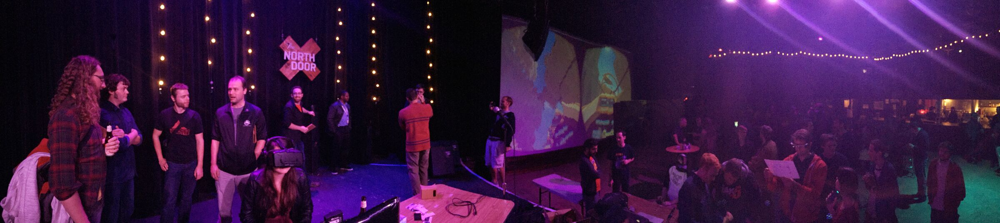
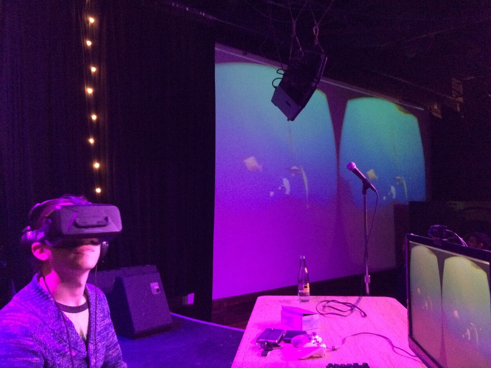

On this page
It Started with Beer
PolyFish didn't start as an ocean sim. It started as a visualization of beer fermentation.
The idea was simple: yeast eat sugar, reproduce, and die. You get a rapid population explosion followed by a sudden die-off once all the food is consumed. It's the same population curve you see in any closed ecosystem - growth, carrying capacity, collapse.
This was in the early days of modern VR development, right after positional tracking arrived. Seeing little geometric representations of yeast moving around, grabbing food, making babies, and dying - in VR, with real depth and presence - was surprisingly powerful. The simple shapes looked alive.
The core loop: Organisms find food → eat → gain energy → reproduce → food runs out → die-off. This exact lifecycle still drives PolyFish today, just with fish instead of yeast and an ocean instead of a petri dish.
From Yeast to Ocean
The fermentation sim reminded Matt of something - his experiences scuba diving. The swarm behavior, the way organisms cluster around food sources, the ebb and flow of life. It looked like an ocean. And he wanted to build one.
Beyond the ecosystem, this was a chance to play with procedural animation. The technique: apply a sine wave masked by joint influence, with offsets per bone so you get overlapping waves of motion flowing through the body. It's what gives the fish their organic swim cycle - no keyframe animation, just math that feels alive.
The original project was built in Unity, hand-coded as a hacky experiment. It never shipped as a product, but it was demoed onstage at an Austin VR meetup in 2014 - one of those early-VR community gatherings where everyone was figuring out what positional tracking could do.


The VR Prototype
Built in Unity as a positional-tracking experiment. Geometric creatures with procedural sine-wave animation, basic food chain, physics-driven movement. Demoed at an Austin VR meetup.
The Long Shelf
The project sat dormant. Unity versions advanced, VR hardware evolved, but the little fish tank stayed frozen in time.
The Remaster Begins
A birthday gift idea sparked a rewrite from Unity to Three.js - bringing the fish to the browser so the narration could be heard anywhere.
The Narration
Once the core ecosystem was working in the original Unity build, a thought arrived: what if this had narration? The fish were already living and dying in a cycle that felt like a nature documentary. Why not lean into that?
Matt wrote a script - deliberately cheesy, documentary-style voice-over - and sent it to a voice-over pro he's close to: his father.
The narration became the soul of the project. It transforms PolyFish from a tech demo into something with personality - a little underwater documentary that doesn't take itself too seriously. The auto-play mode, where the camera system drives itself and narration triggers at key ecosystem moments, grew directly out of wanting to deliver that documentary experience end-to-end.
Why Remaster?
The motivation was personal. Matt's father's birthday was coming up, and it felt like a fun challenge: bring the Unity project over to Three.js so he could hear his narration anywhere - no install, no app store, just a URL.
The port itself was a smooth process using Claude, but there was a catch. The original project was a hand-built hacky experiment from 2014. The code worked, but it looked and felt dated. A straight port would have preserved the jank along with the charm.
What started as "get it running in a browser" became "let's see how much better this can be."
The Port
Porting from Unity to Three.js meant rethinking almost every system at a technical level while keeping the core experience intact. Here's what the translation looked like:
Physics was the biggest shift. Unity's built-in Rigidbody system uses PhysX under the hood - impulse-based forces at a fixed 50 Hz tick rate. The Three.js version uses Jolt Physics compiled to WebAssembly, running in the same frame loop as rendering. The force model had to be completely rethought: Unity applied tiny impulses per FixedUpdate with random bursts, while the remaster uses continuous thrust with smoothed acceleration.
Creature config values were another challenge. The original Unity scene data had very specific tuning - fish speed 0.8, engine burn time 0.43 seconds, metabolic clock of 2 - and the initial port guessed at many of these. Dialing them in took iteration: too fast and fish would overshoot food; too much food energy and the population would explode.
// Unity's original movement: tiny impulse with random bursts
// rigidBodyRef.AddRelativeForce(
// Vector3.forward * ((speed * Random.Range(1f, 2f)) / 10),
// ForceMode.Impulse);
// Three.js remaster: continuous thrust with smoothed engine states
const thrust = forward.multiplyScalar(cfg.thrustForce * speed);
body.applyForce(thrust);Rendering translated more naturally. Three.js and Unity both use scene graphs with meshes, materials, and lights, so the structure mapped well. But moving from Unity's built-in render pipeline to Three.js meant hand-writing shader modifications - injecting caustic calculations, swim animation, and instancing logic into Three.js's standard material via onBeforeCompile.
What Changed
The core experience is very much the same. The ecosystem is the heart of PolyFish and it stayed intact: the typical run starts slow and quiet, ramps up to wild levels of fish, then dies down once predators appear. That arc is preserved.
But the remaster isn't just a port - it's a significant upgrade in almost every visual and technical dimension.
Unity Original (2014)
- Keyframe + procedural sine animation
- Static kelp meshes with gentle sway
- Basic Unity fog and lighting
- ~100 creatures before frame drops
- Simple free-look camera
- Desktop/VR only (requires install)
Three.js Remaster (2026)
- Fully shader-driven vertex animation
- Verlet soft-body kelp with physics response
- Custom caustics, instanced rendering, marine snow
- 200+ creatures at 60fps (thousands possible)
- Documentary camera with 11 shot types
- Runs in any browser - just a URL
Shader-Driven Animation
After watching the GDC talk on making Abzu years ago, Matt wanted to explore shader-driven animation - but it wasn't something he'd had time to learn the full technical implementation of. Working with Claude made it possible to get the basics up and running, then fine-tune until the result looked better and felt more responsive across all creature types. On top of looking better, it was a significantly more performant method. Instead of hundreds of creatures, the sim could now support thousands.
Soft-Body Kelp
Kelp got a huge improvement. The Unity version had simple animated meshes - flowy bits that looked decent but didn't respond to their environment. The remaster uses a full Verlet physics simulation: each kelp stalk is a chain of nodes with constraints, influenced by current, creature collisions, and gravity. They're soft bodies that react to the world around them. The difference in immersion is dramatic.
The Auto-Play Camera
Something Matt loves doing with projects is building an "auto-play" mode. In PolyFish's case, that meant going all-in on the documentary feel. The auto-play system is the most robust camera system he's worked on so far: a Director that reads the ecosystem state, a Cinematographer that composes shots, and an Ecosystem Scout that finds interesting subjects. It picks shot types, manages transitions, and times narration triggers - all to create a hands-off nature documentary that plays itself. It still needs work, but it was one of the most fun experiments in the project.
The role of AI in the remaster: Claude was used extensively throughout the port - from translating Unity C# to JavaScript, to implementing shader-driven swim animation, to building the cinematic camera system. The collaboration allowed rapid iteration on systems that would have taken much longer to learn and build from scratch.